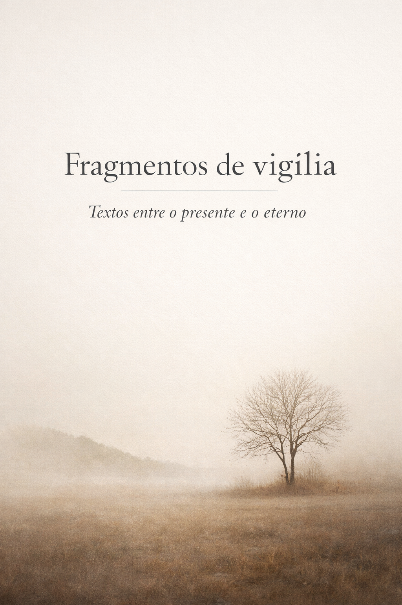

Textos entre o presente e o eterno
Se você quiser, tem alguns trechos no corredor.
O Lugar Entre é o espaço contemplativo onde nascem as obras deste autor. Não se trata de um método nem de uma filosofia formal, mas de uma forma de olhar a existência — o ponto em que memória, silêncio e presença convivem.
As obras reunidas neste espaço foram catalogadas pela Câmara Brasileira do Livro e pertencem ao campo da narrativa contemplativa existencial, marcada por temas como interioridade, memória, cura e permanência.
Cada livro representa uma etapa de uma mesma travessia: compreender, habitar e transmitir aquilo que permanece.
A compreensão deste espaço encontra eco na tradição bíblica,
especialmente na percepção de que o ser humano vive entre o tempo
e a eternidade:
“Tudo fez formoso em seu tempo; também pôs a eternidade no coração do homem.”
(Eclesiastes 3:11)
Às vezes, o livro pede presença.
Um tempo para estar diante de Deus.
Um encontro de fé, escuta e oração, entre cânticos, Palavra, silêncio e adoração.
Nosso primeiro encontro aconteceu diante do Santíssimo Sacramento. Éramos poucos, mas vivemos um momento de acolhida, gratidão e oração.
Porque, às vezes, quando nos reunimos para oferecer algo a Deus, descobrimos que também somos acolhidos por Ele.
Havendo interesse e possibilidade, novos encontros poderão acontecer.
Faça parte do grupo Tempo de Vigília e receba notícias dos próximos encontros, momentos de oração, cânticos e adoração.
Participação gratuita. Grupo exclusivo para comunicados. Os participantes podem ver os números de telefone dos demais membros.
João Ferreira — autor dos livros “O lugar que existe entre o presente e o eterno” e “Um Lugar para Ficar”.